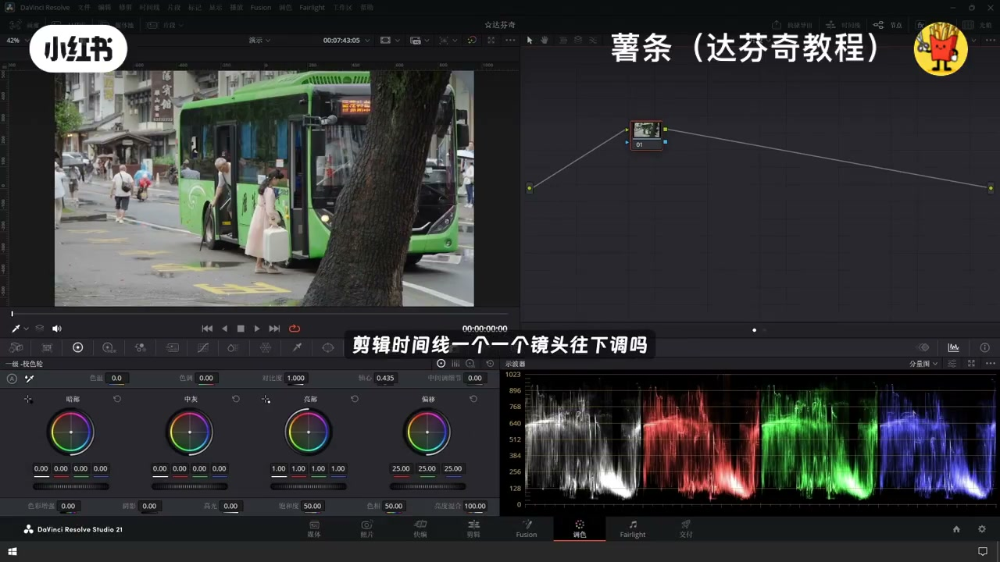
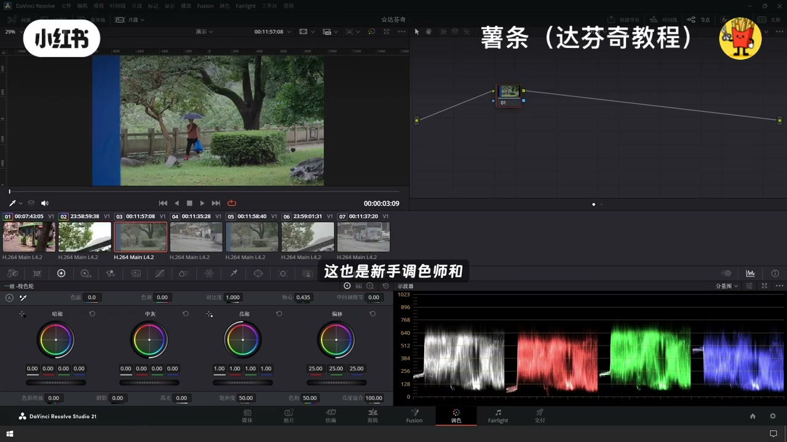
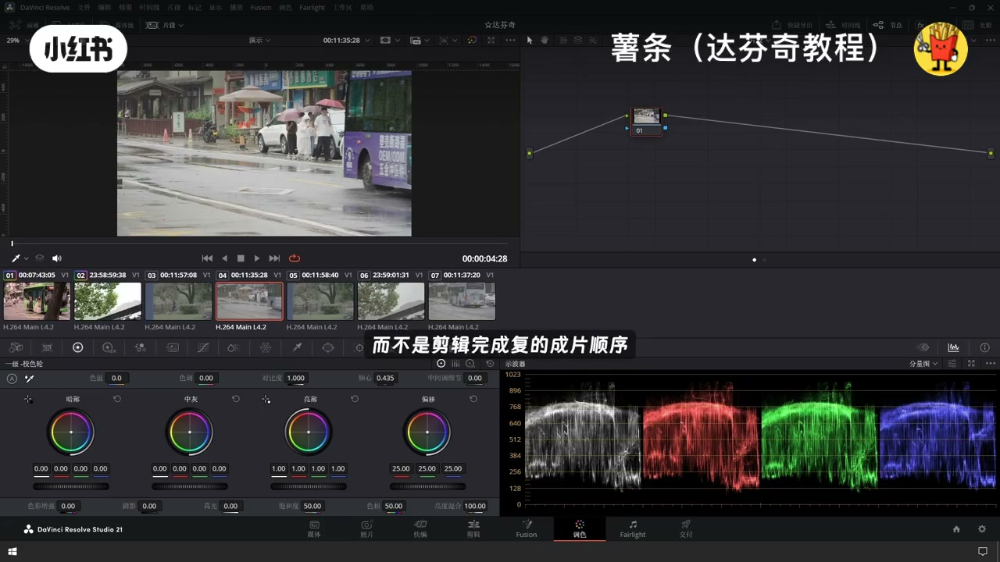
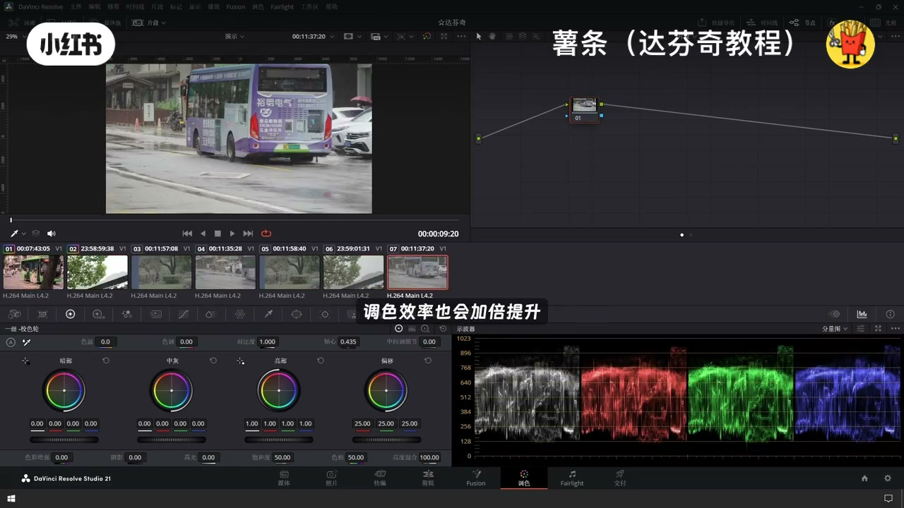
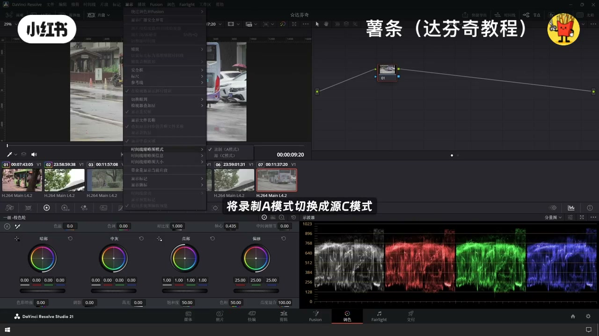
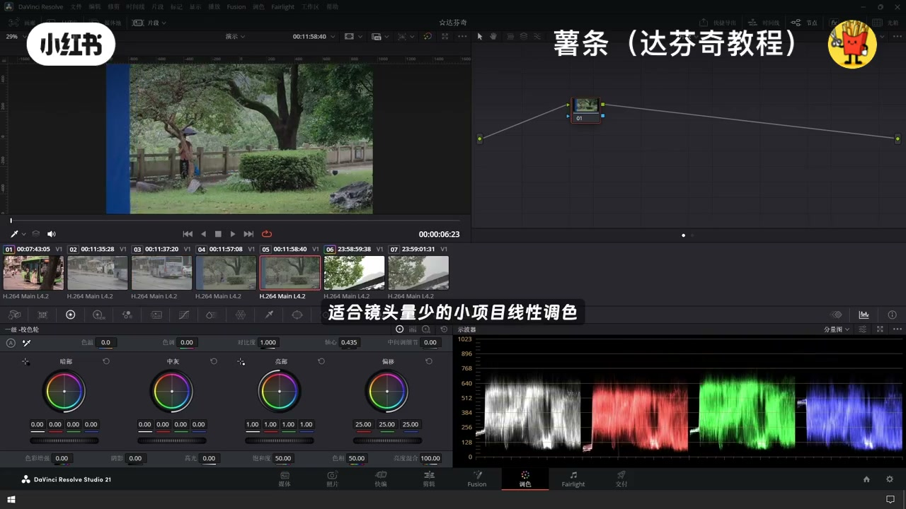
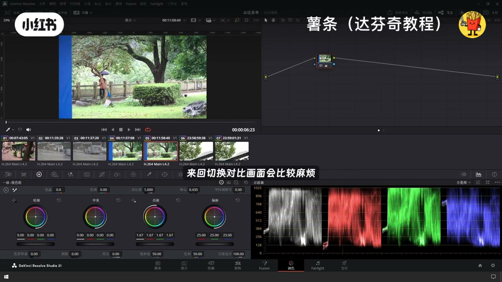
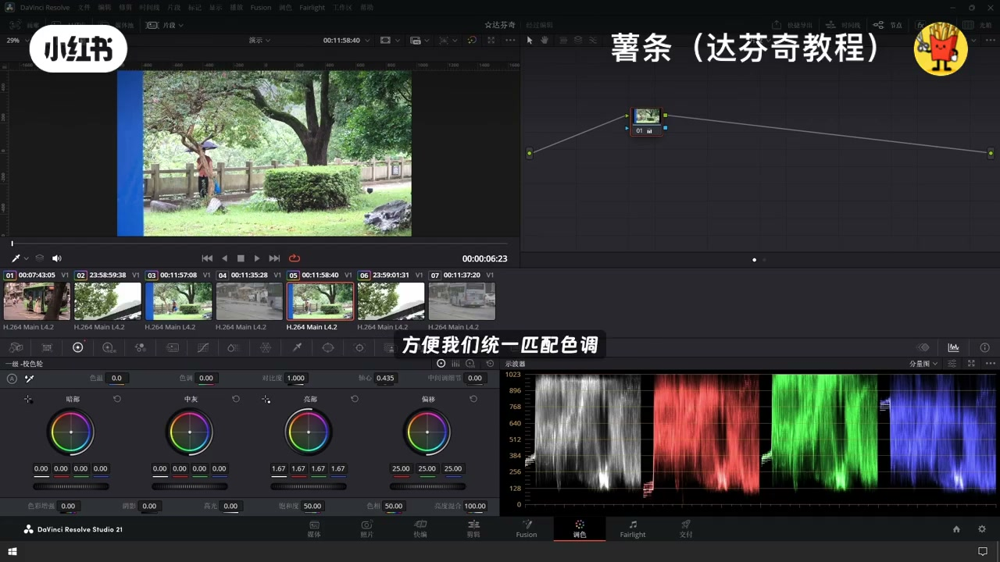

内容要点
「达芬奇调色提速🔥时间线缩略图模式🔥新手和」教程要点：一个设置让你达芬奇的调色效率提升10倍 → 使用达芬奇调色 → 你还在跟着剪辑时间线一个一个镜头往下调吗 → 镜头少的时候这么做完全没有问题…
知识结构
一个设置让你达芬奇的调色效率提升10倍
同一场景同一光线的镜头集中在一起
镜头穿插剪辑的素材
- 一个设置让你达芬奇的调色效率提升10倍
- 使用达芬奇调色
- 你还在跟着剪辑时间线一个一个镜头往下调吗
- 镜头少的时候这么做完全没有问题
- 但是一旦镜头的数量变多
一个设置让你达芬奇的调色效率提升10倍
00:00–00:32一个设置让你达芬奇的调色效率提升10倍
一个设置让你达芬奇的调色效率提升10倍；使用达芬奇调色；你还在跟着剪辑时间线一个一个镜头往下调吗；镜头少的时候这么做完全没有问题；但是一旦镜头的数量变多；就会明显感觉到调色效率大打折扣；这也是新手调色师和资深调色师拉开差距的关键点；今天分享一个达芬奇超实用的工作技巧；做大项目；优先按照素材原始拍摄时间调色；而不是剪辑完成后的场面顺序；这么做的好处也很直观


00:31–01:04同一场景同一光线的镜头集中在一起
同一场景同一光线的镜头集中在一起；画面匹配也会变得简单很多；调色效率也会加倍提升；这个功能靠达芬奇时间线缩略图的两种显示模式来实现；点击顶部菜单的显示；选择时间线缩略图；将录制A模式切换成原C模式；默认A模式也叫录制模式；素材按照剪辑时间线排列；也就是时间的叙事顺序；是和镜头量少的小项目线性调色；但是碰到独机位正反打


01:03–01:26镜头穿插剪辑的素材
镜头穿插剪辑的素材；A模式下同场景镜头散落在时间线各处；来回切换对比画面会比较麻烦；这个时候切换到C模式；软件会读取素材的自带信息；自动还原素材真实拍摄程序；把同机位同场次的镜头自动归类；方便我们统一匹配色调调整光影；画面一致性更强；操作也省心很多




口述/画面要点（34段）
结合 Whisper medium 与画面大字整理；专有名词已校对。
一个设置让你达芬奇的调色效率提升10倍
使用达芬奇调色
你还在跟着剪辑时间线一个一个镜头往下调吗
镜头少的时候这么做完全没有问题
但是一旦镜头的数量变多
就会明显感觉到调色效率大打折扣
这也是新手调色师和资深调色师拉开差距的关键点
今天分享一个达芬奇超实用的工作技巧
做大项目
优先按照素材原始拍摄时间调色
而不是剪辑完成后的场面顺序
这么做的好处也很直观
同一场景同一光线的镜头集中在一起
画面匹配也会变得简单很多
调色效率也会加倍提升
这个功能靠达芬奇时间线缩略图的两种显示模式来实现
点击顶部菜单的显示
选择时间线缩略图
将录制A模式切换成原C模式
默认A模式也叫录制模式
素材按照剪辑时间线排列
也就是时间的叙事顺序
是和镜头量少的小项目线性调色
但是碰到独机位正反打
镜头穿插剪辑的素材
A模式下同场景镜头散落在时间线各处
来回切换对比画面会比较麻烦
这个时候切换到C模式
软件会读取素材的自带信息
自动还原素材真实拍摄程序
把同机位同场次的镜头自动归类
方便我们统一匹配色调调整光影
画面一致性更强
操作也省心很多